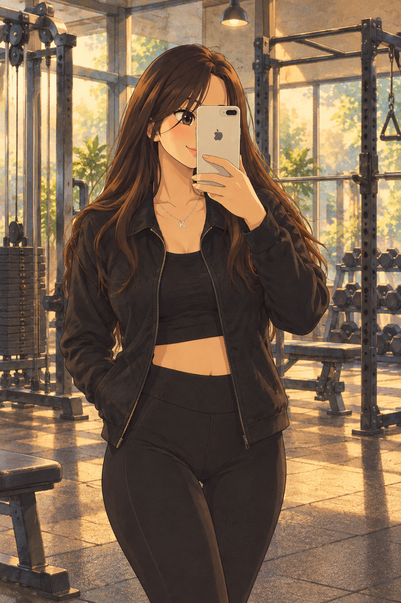
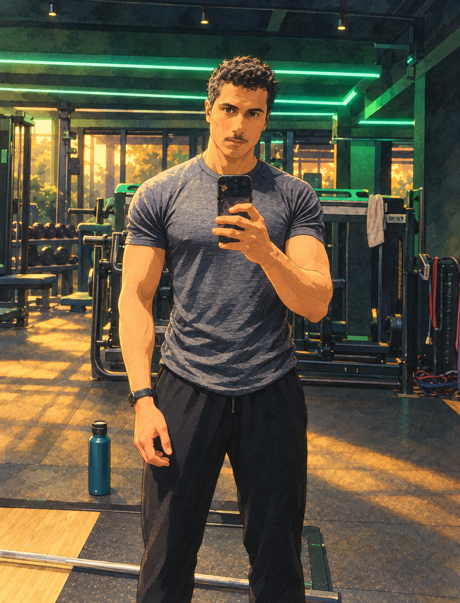

A HIGHLY SERIOUS TRANSMISSION
A very
important
announcement.
A few gym memories, one questionable memory,
and a very important Saturday mission. 😂
READING TIME: ONE REST BETWEEN SETS

leg-day survivor ✿EXHIBIT A / THE DETECTIVE
01 / A SMALL MEMORY PROBLEM
I remember being two.
But i can’t remember the last time I walked you to your car
I can remember myself at 2 years old (proof attached 😂), but somehow I can’t remember the last time we walked to your car together.
I miss those days.
Proof attached.
Memory: apparently selective.


02 / BETWEEN THE SETS
You made the hard
days a little easier.
Anyway, You somehow made gym sessions easier,Especially leg day, which is already a criminal offence against humanity …
Today's session was the worst i couldn't talk to you for 2 minutes straight.
But I guess those little moments are becoming harder to have now.
At this point I just realised… should I just stop seeing you?
03 / JOKES ASIDE
I’ll genuinely miss our little conversations, the eyes exchanges, and those moments that made going to the gym a little more fun.
04 / THE NEXT SIDE QUEST
Saturday’s mission:
smell incredible.
Anyway, life goes on, and this guy has a very important mission on Saturday: blind-buying a new perfume. 🫡
Wish me luck… hopefully it’s better than Rabanne One Million.
tw tra bch naamel collection kifek hh

optimistically
unqualified.
AND FINALLY…
Take care of yourself,
detective. 🕵️♀️
keep building that back, keep watching mystery movies, keep wearing in black and keep shining. 🤍